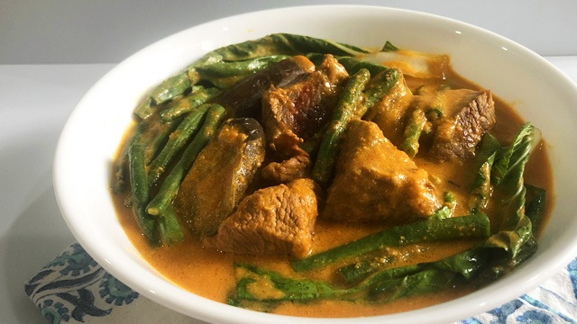
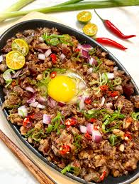

Katsilog is a combination of katsudon and filipino dishes. This dish that includes basil, katsudon, fried rice, and egg.
Recipe445 pesos (good for 1)
Kare-kare is a very popular filipino dish and is loved among many. This includes lechon kawali, peanut butter stew, vegetables, and annatto seeds.
Recipe600 (good for 4)
Salmon teriyaki is one of the popular dishes in Japan as it is a simple but complet meal. This includes salmon, broccoli, and rice.
RecipeCrispy pata is one of the most loved dishes in the Philippines, it inclueds deep fried pig trotters or knuckles served with a soy-vingegar dip.
RecipeTempura is a typical japanese dish but one of the most loved. This includes of seafood(normally shrimp), vegetables(which are deep fried), rice and sauce.
RecipeRamen is a japanese noodle dish is super common. This includes noodles, soy sauce, miso, sliced pork, nori, menma, and scallions.
Recipe
Sisig is a Filipino dish served on a sizzling hot plate! This includes park jowl and ears, pork belly, and is seasoned with calamansi, onions, and chilli pepper.
RecipeSoy chicken is a fusion of Filipino and Japanese sauces combined together with fried chicken. This includes fried chicken, cheese, chive flakes, and onion flakes.
RecipeGyudon is a good Japanese dish if you want to cool down. This includes thinly sliced beef, raw egg yolk, onions, chives, and rice.
Recipe